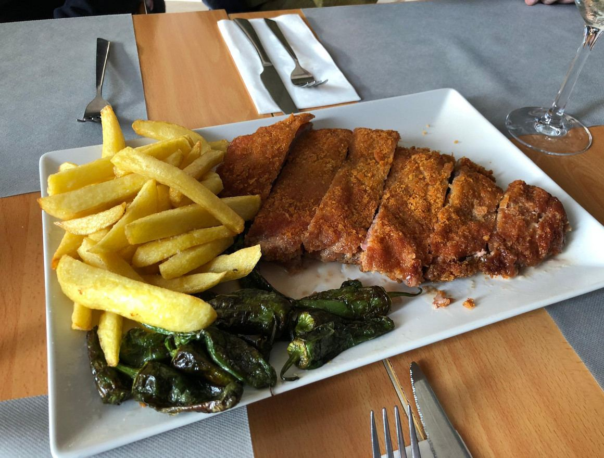
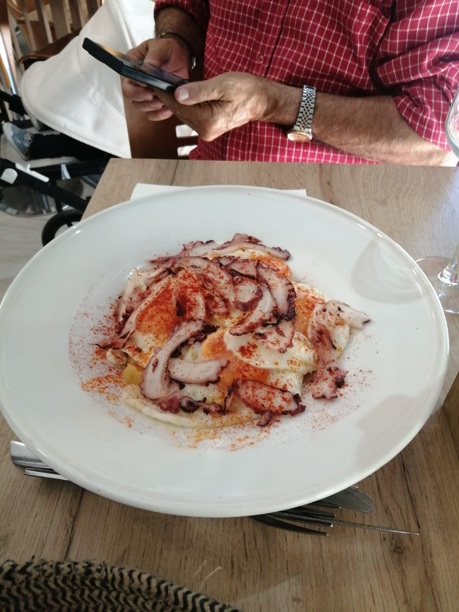
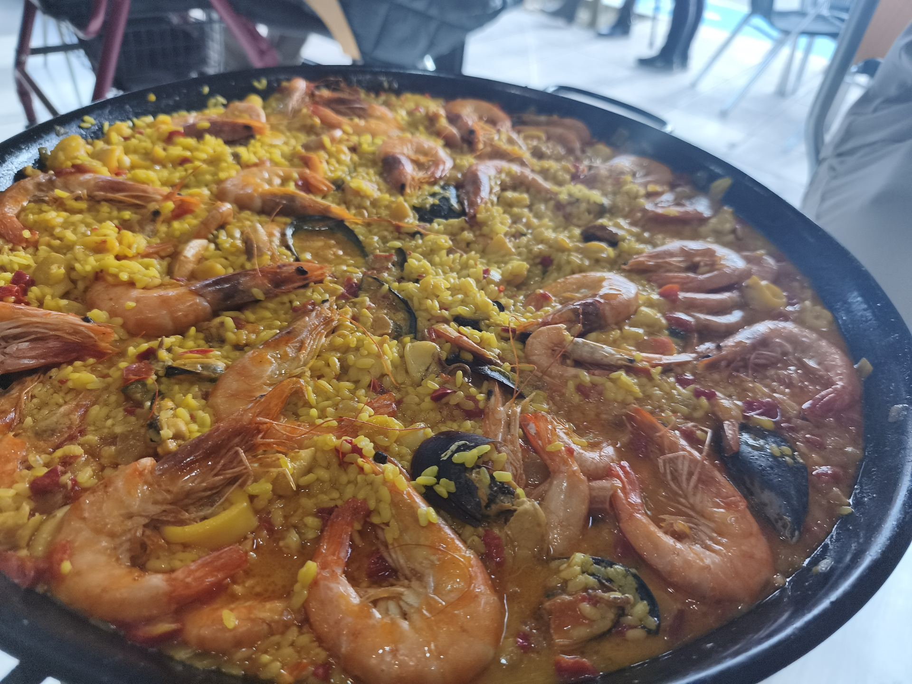
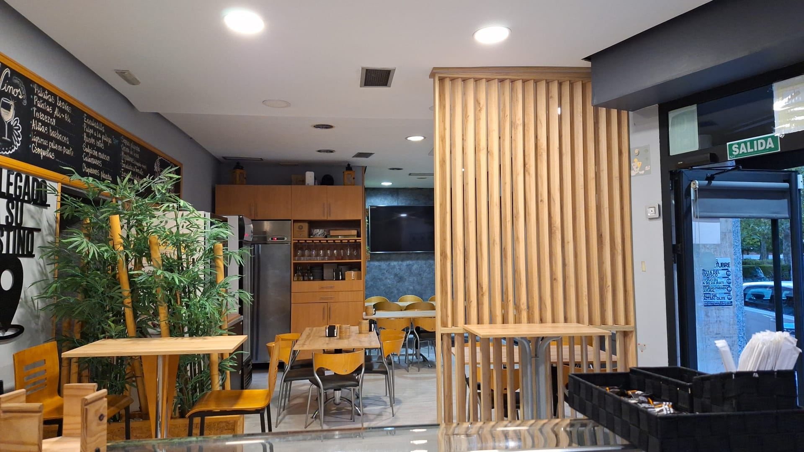
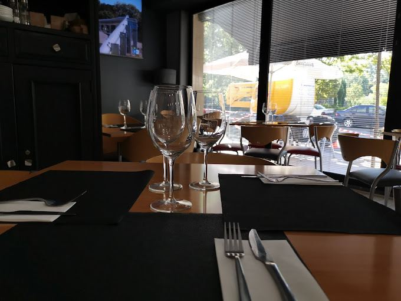

Arroces por encargo
Paella, arroz con bogavante, arroz negro y otras opciones para compartir.
Ver arrocesEn Piel Canela Gastrobar te esperamos en Calle Hípica 13, muy cerca de El Corte Inglés del Paseo Zorrilla, con una propuesta sencilla: buen producto, raciones abundantes y un ambiente cercano para comer, cenar o celebrar.

Desde unas raciones después del trabajo hasta una comida familiar, un cumpleaños o una cena de grupo: cocina casera, platos reconocibles y servicio cercano en una zona cómoda de Valladolid.
Paella, arroz con bogavante, arroz negro y otras opciones para compartir.
Ver arrocesPor encargo, perfecto para grupos, comidas familiares y celebraciones.
ConsultarCroquetas, torreznos, pulpo, huevos rotos, zamburiñas y cachopo.
Ver racionesCumpleaños, cenas de amigos, comidas familiares y empresa.
Ver gruposProducto, ubicación, trato cercano y platos para compartir en Valladolid.

Pensadas para compartir, con producto fresco y preparación al momento.

Arroces, paellas y lechazo para comidas especiales.

Mesas para grupos, parejas, familias y celebraciones.

Calle Hípica, junto al Paseo Zorrilla y cerca de El Corte Inglés.
"Camarera super profesional, educada, atenta y simpática. Cachopo buenísimo. Volveremos."
"Todo muy rico, hemos comido 3 menús. Volveremos a repetir."
"Excelente lugar para tomar un vermut, comer, cenar o tomar un café. Ambiente buenísimo."
Estamos en Calle Hípica 13, 47007 Valladolid, junto al Paseo Zorrilla y cerca de El Corte Inglés.
Cocina casera, raciones, tapas, cachopo de ternera, carnes, pescados, arroces por encargo, lechazo asado y postres caseros.
Sí, puedes reservar online desde esta web o llamarnos al 983 475 132 y al 662 467 435.
Sí, tenemos raciones pensadas para compartir: croquetas, torreznos, pulpo, huevos rotos, zamburiñas, cachopo, ensaladas y más opciones caseras.
📍 Dirección: Calle Hípica 13, 47007 Valladolid
📞 Teléfono: 983 475 132 · 662 467 435
🍽️ Tipo: Restaurante de raciones y cocina casera en Valladolid